Oracle Fusion 26CAI Agent Studio CLIClaude Code
I built a Fusion agentic app by typing one paragraph
Oracle put its own AI Agent Studio expertise on GitHub as files a coding agent can read. Here is every step to use it.
01What this actually is
Oracle released something in 26C that is easy to miss and hard to un-see once you get it.
They put their own Fusion AI Agent Studio expertise into a public GitHub repo — as plain text files and a command-line tool. Any coding agent can read those files. Which means you can now describe a business outcome in a paragraph, and the agent will build the real Oracle app files for you.
Not a mockup. Not a chatbot demo. Actual .app and .wf files that Oracle Fusion validates and runs.
I ran the whole thing in Claude Code. This guide is every step, in order, with nothing skipped.
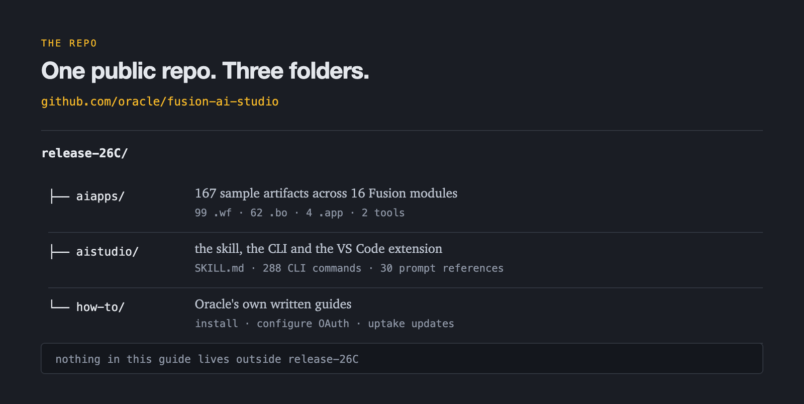
release-26C.The whole idea in two pictures
On your machine, a coding agent reads Oracle’s expertise (written down as files) and uses Oracle’s CLI to write app files:
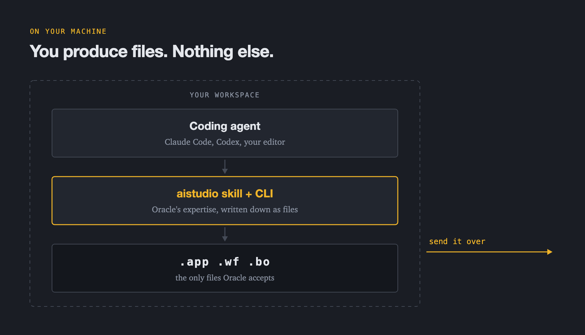
Then you send those files to Oracle, which checks every one of them before anything runs:
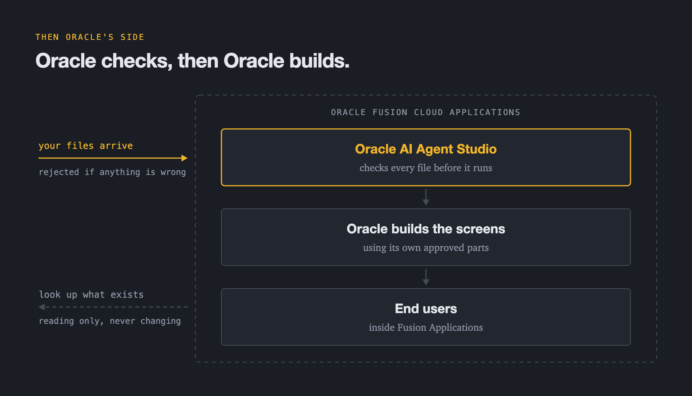
The boundary is the whole point
The AI never builds the screens. It never invents a widget. It never talks to your database. It writes files. Oracle checks the files. Oracle builds the screens using its own approved parts. If a file is wrong, Oracle rejects it.
That single boundary is why this is safe enough to use on real HR and supply chain data.
The four moving parts
| Part | What it is | Where it lives |
|---|---|---|
| The repo | Oracle’s public samples and tools | github.com/oracle/fusion-ai-studio |
| The skill | Oracle’s know-how as markdown an agent reads | aistudio-skill.zip |
| The CLI | 288 commands that create and check artifacts | scripts/aistudio.js |
| The extension | Login, plus a visual editor for .app files | aistudio-extension.zip |
Oracle’s own guide is written for Codex. Everything works the same in Claude Code — you just put the skill in one extra place. That one extra step is Step 5.
02Who this is for
Anyone
Clone the repo, read the skills, run the CLI on your own laptop. Free. You can build and validate app files with no Fusion environment at all.
Fusion customers
You can go all the way — publish and put the app in front of real users.
Everyone else
Stay for the five rules. They apply to any agent you build, on any platform.
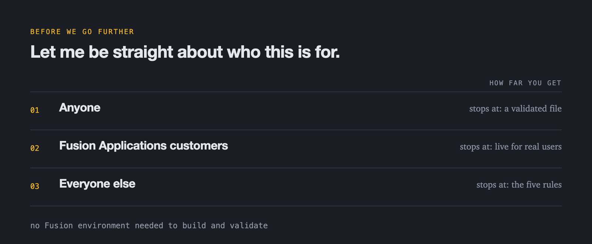
03The five rules that make this work
Oracle did not just ship a tool. They shipped a set of habits, baked into the skill files. This is the part worth stealing even if you never touch Fusion.
The spec comes first
Nothing gets built until the plan is written down and you agree to it. Two screens, three panels, four detail views, and an explicit list of what it will not build yet.
At home we say “build me an HR app” and hope. Here the agent hands you a written plan and waits.
One gated write action
Out of the box the app can look, but never change anything. Click around, dig in, ask questions — all read-only. The one action that touches real HR data has to be switched on by hand, and it asks before it does anything.
Twelve tools and write access to everything, wired up on a Sunday, is how you get an incident.
Discover before you build
The agent searches your files first, finds the workflows that already exist, and reuses them. It only builds what is genuinely missing, and it never edits or renames the rest.
The most expensive agent in a big company is the one that rebuilds something that already existed.
Structure over improvisation
Open one of these workflows and the agent is not making it up as it goes. The steps are fixed: work out what was asked, go get the data, let the model think, send back an answer. And it has sixty seconds to finish.
One prompt, one model, and hope for the best. When speed and correctness both matter, fixed steps win.
Unvalidated means unfinished
When the build finishes, the agent does not announce that it is done. It runs the checks first. If the checks have not passed, the skill treats the work as unfinished and fixes it before anything else.
Your agent saying “done” is not proof. The checks passing is.
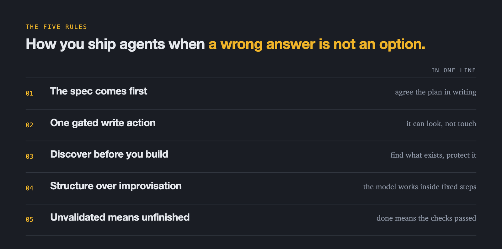
04Before you start
Get these five things ready. It takes about ten minutes.
| # | What you need | How to check |
|---|---|---|
| 1 | Node.js v18 or newer | node --version |
| 2 | Git | git --version |
| 3 | VS Code | code.visualstudio.com |
| 4 | Claude Code | claude.com/claude-code |
| 5 | Fusion URL + user optional | Ask your Fusion admin |
About number five
You only need a Fusion environment when you want to fetch real business objects or publish the app. You can do the whole setup, build app files, and validate them with no environment at all. Start there if you are just exploring.
05Step-by-step setup
Get Oracle’s repo
Make a folder called fusion-ai-repo, go into it, and clone:
mkdir -p ~/fusion-ai-repo
cd ~/fusion-ai-repo
git clone https://github.com/oracle/fusion-ai-studio.git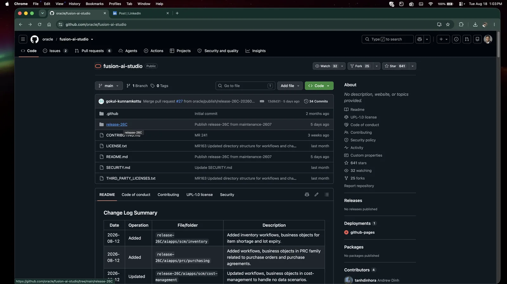
release-26C.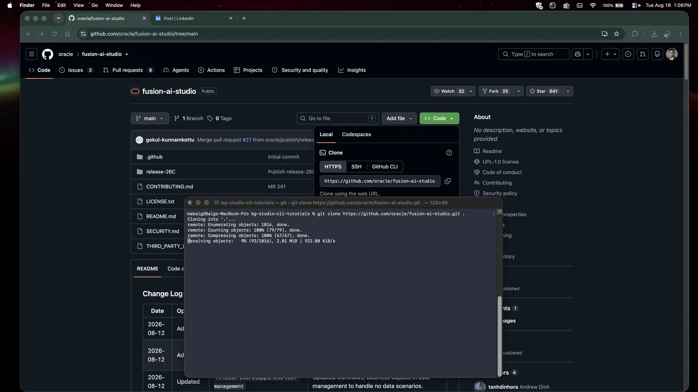
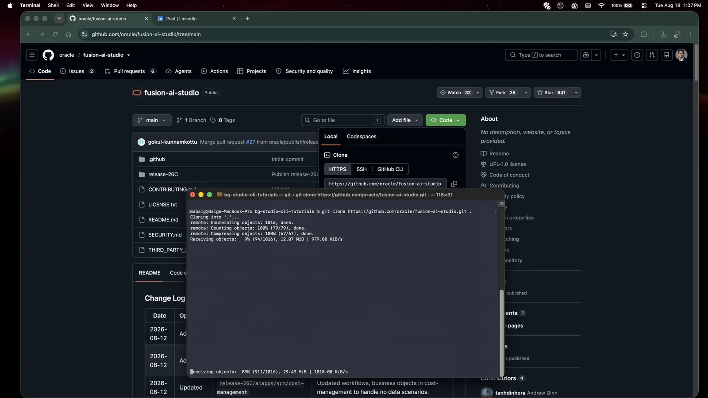
If you have already made the folder, clone into it with a trailing dot — git clone https://github.com/oracle/fusion-ai-studio.git . — which is what the screenshots above show.
Prefer not to use Git? On the GitHub page click Code → Download ZIP, then unzip it into fusion-ai-repo. Your folder will be called fusion-ai-studio-main instead of fusion-ai-studio. Everything else is identical — just remember which name you have.
You now have this:
What is in aiapps is worth knowing about, because the agent reuses it:
| Artifact type | Count | Modules covered |
|---|---|---|
Workflows .wf | 99 | HCM: absences, benefits, career development, compensation, employment, human resources, journeys, learning, recruiting, succession management, talent management, time and labour. SCM: inventory, maintenance, cost management. FIN: ledger insights. |
Business objects .bo | 62 | |
Apps .app | 4 | |
| Deeplinks + tools | 2 |
Create your workspace folder
This is a different folder from the repo. The repo is where Oracle’s stuff lives. The workspace is where your app lives.
mkdir -p ~/fusion-ai-workspace
cd ~/fusion-ai-workspaceKeeping them separate matters. When Oracle ships an update you replace things inside the repo and re-copy — and your own work in the workspace is never at risk.
Install the VS Code extension
The extension gives you two things: a login flow, and a visual editor for .app files. You want both.
Go to the bin folder in the repo:
Double-click aistudio-extension.zip (macOS) or right-click → Extract All (Windows). Inside you get one file: aistudio-extension.vsix.
Now install it. In VS Code:
- Click the Extensions icon in the left bar (the stacked squares)
- Click the
...menu at the top of the Extensions panel - Choose Install from VSIX…
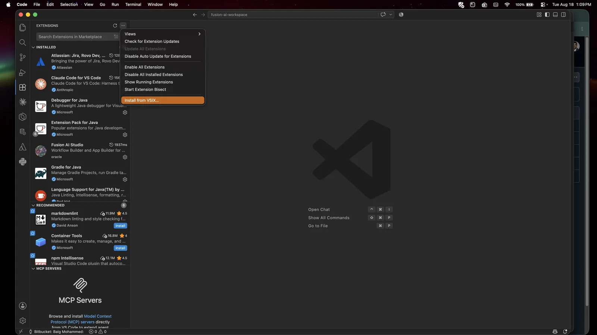
... menu.- Pick
aistudio-extension.vsixand click Install - Reload VS Code if it asks
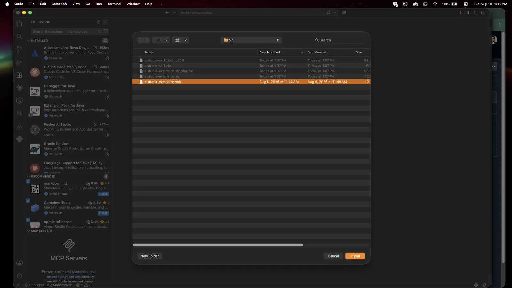
bin folder too: both zips, both checksums, and the .vsix you just unpacked.Check it worked
Press Cmd+Shift+P (macOS) or Ctrl+Shift+P (Windows/Linux) and type Fusion AI Studio. You should see a list of commands:
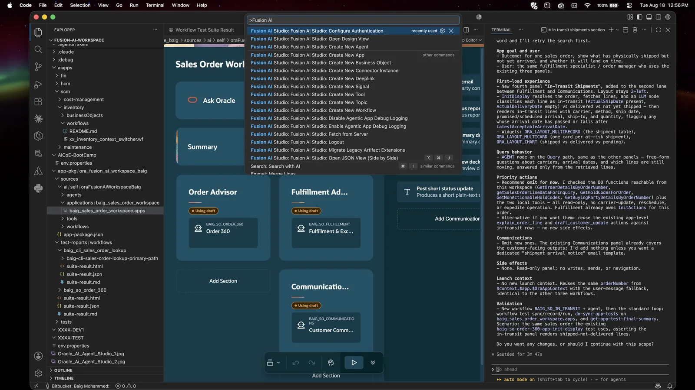
.vsix.Here is the full set and what each one is for:
| Command | Use it for |
|---|---|
| Configure Authentication | Connect VS Code to your Fusion environment |
| Fetch from Server | Pull an existing artifact down into your workspace |
| Create New App | A user-facing workspace with panels, actions and agents |
| Create New Workflow | A step-by-step flow that calls AI, services, code or approvals |
| Create New Business Object | A reusable data connection to Fusion or another service |
| Create New Agent | A reusable AI worker with a role, tools and instructions |
| Create New Tool | A capability for an agent: business object, deeplink, REST, connector |
| Create New Connector Instance | A configured connection to an approved external system |
| Create New Deeplink | A link that opens a target page or record |
| Create New Topic | Instructions guiding an agent on one subject |
| Enable / Disable Agentic App Debug Logging | Turn detailed app logs on or off |
| Logout | Sign out of the environment |
Install the aistudio skill
This is the important one. The skill is Oracle’s expertise written down so an agent can read it.
Unzip aistudio-skill.zip from the same bin folder. You get a folder called aistudio containing SKILL.md, scripts/, references/ and resources/.
cd ~/fusion-ai-workspace
mkdir -p .agents/skills
cp -R ~/fusion-ai-repo/fusion-ai-studio/release-26C/aistudio/bin/aistudio-skill/aistudio \
.agents/skills/Now do the same for the app skills — the domain-specific guides. They are in a different folder:
cd ~/fusion-ai-repo/fusion-ai-studio/release-26C/aistudio/aistudio-apps-skills
unzip aistudio-apps-skills.zip
cp -R aistudio-apps-skills/* ~/fusion-ai-workspace/.agents/skills/You should end up with exactly this:
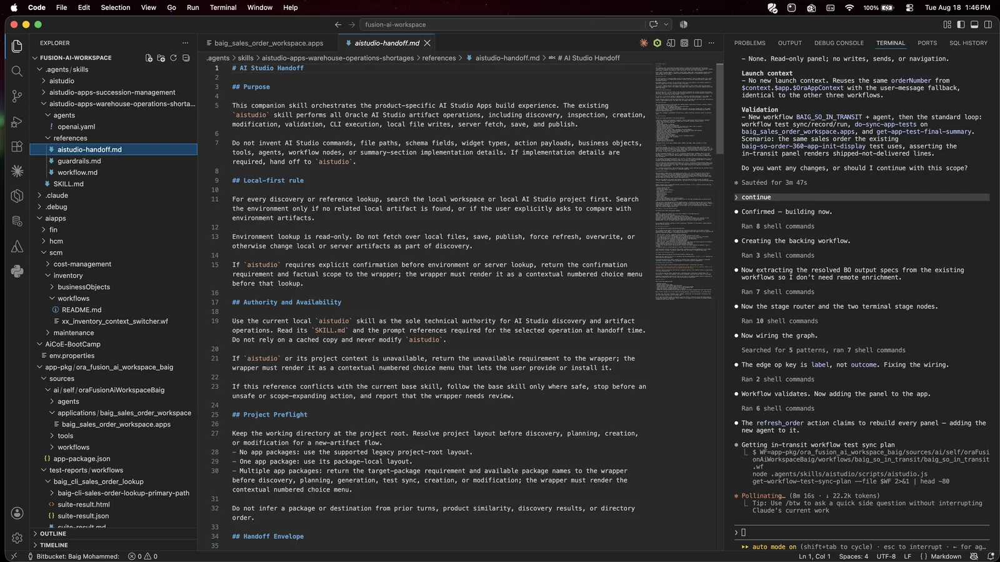
Make Claude Code see the skills
This is the Claude Code step Oracle’s guide does not cover
Oracle’s guide puts skills in .agents/skills/. That is where Codex looks. Claude Code looks in .claude/skills/.
You do not want two copies. Keep the real files in .agents/skills/ (so the CLI paths in every Oracle prompt still work) and point .claude/skills/ at them.
macOS and Linux — use symlinks
cd ~/fusion-ai-workspace
mkdir -p .claude/skills
cd .claude/skills
ln -s ../../.agents/skills/aistudio aistudio
ln -s ../../.agents/skills/aistudio-apps-succession-management \
aistudio-apps-succession-management
ln -s ../../.agents/skills/aistudio-apps-warehouse-operations-shortages \
aistudio-apps-warehouse-operations-shortages
# check: you should see three arrows pointing into .agents/skills
ls -la ~/fusion-ai-workspace/.claude/skillsWindows — just copy instead
Symlinks on Windows need Developer Mode or an admin shell, so save yourself the trouble:
cd $HOME\fusion-ai-workspace
New-Item -ItemType Directory -Force .claude\skills
Copy-Item -Recurse .agents\skills\* .claude\skills\The trade-off: if you copy, you have to re-copy whenever Oracle ships a skill update. Symlinks update themselves.
Why keep .agents/skills/ as the real home?
Because every Oracle prompt, every example, and the skill’s own instructions all say to run the CLI as node .agents/skills/aistudio/scripts/aistudio.js. With this layout that path is always correct, and both Claude Code and Codex work in the same workspace.
Copy the sample apps
cp -R ~/fusion-ai-repo/fusion-ai-studio/release-26C/aiapps ~/fusion-ai-workspace/Do not skip this. Rule 3 is “discover before you build” — and this folder is what there is to discover. Skip it and the agent has nothing to reuse, so it builds everything from scratch.
Connect to your Fusion environment
Open your workspace in VS Code (File → Open Folder → fusion-ai-workspace), then press Cmd/Ctrl+Shift+P and run Fusion AI Studio: Configure Authentication.
You get two choices.
Basic authentication — fine for dev and test
Three prompts. First, the environment URL. It must end in .com with no extra path — so https://your-env.fa.us2.oraclecloud.com, not https://your-env.fa.us2.oraclecloud.com/fscmUI/… Then username, then password.
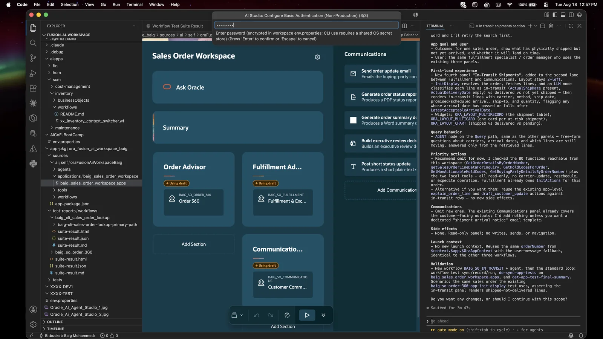
OAuth / token authentication — required for production
This one is a two-place job: register a public client in Oracle IDCS, then register its Application ID back in AI Agent Studio.
In IDCS — Integrated applications → Add application → Mobile Application. Save it, open the OAuth configuration tab, then click Edit OAuth configuration:
- Allowed grant types: Authorization code, Refresh token, Implicit. Leave Device code off.
- Turn on Allow non-HTTPS URLs
- Redirect URLs:
http://127.0.0.1:43188/callbackandurn:ietf:wg:oauth:2.0:oob - Logout and post-logout redirect URL:
http://127.0.0.1:43188/logout - Leave Bypass consent off
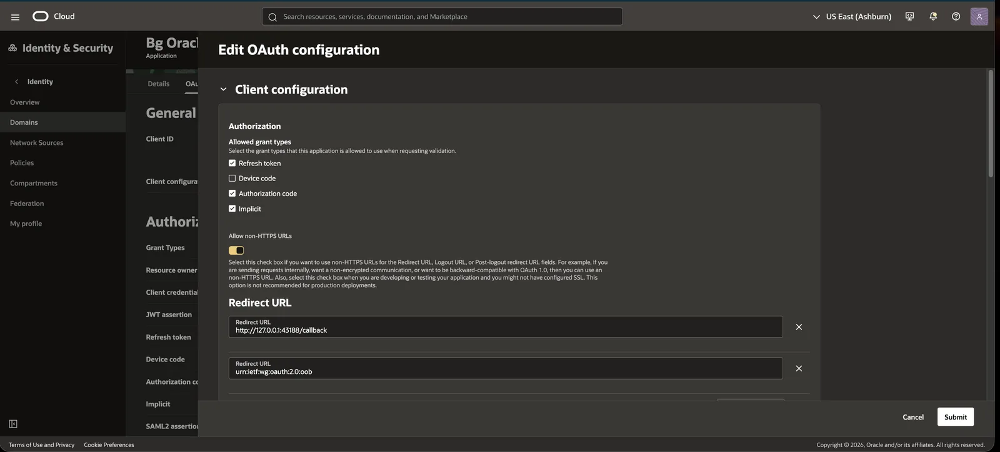
Further down the same panel, under Token issuance policy, turn on Add resources and grant the scopes for Oracle Fusion AI Cloud (Spectra) and Oracle Boss Cloud (Spectra). Leave Add app roles off.
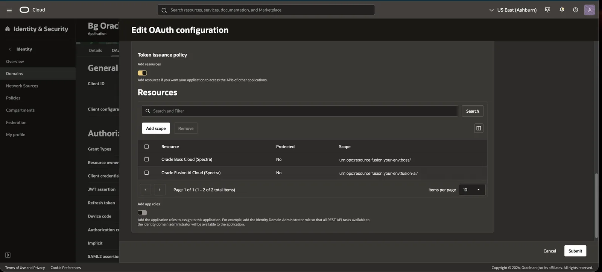
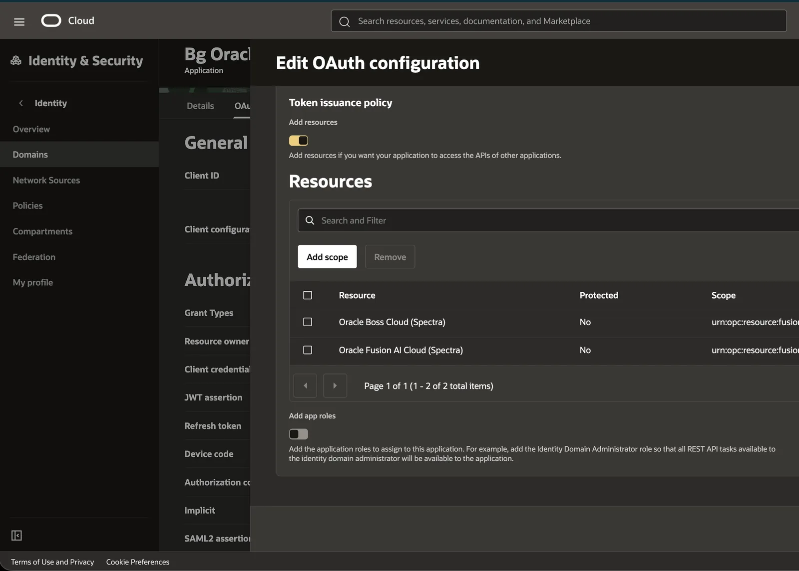
urn:opc:resource:fusion:<your-env>:fusion-ai/ and …:boss/.Then in AI Agent Studio — Credentials → AI Studio CLI → Enable AI Studio CLI. The page spells out the same nine steps and gives you the field to paste the generated Application ID into:
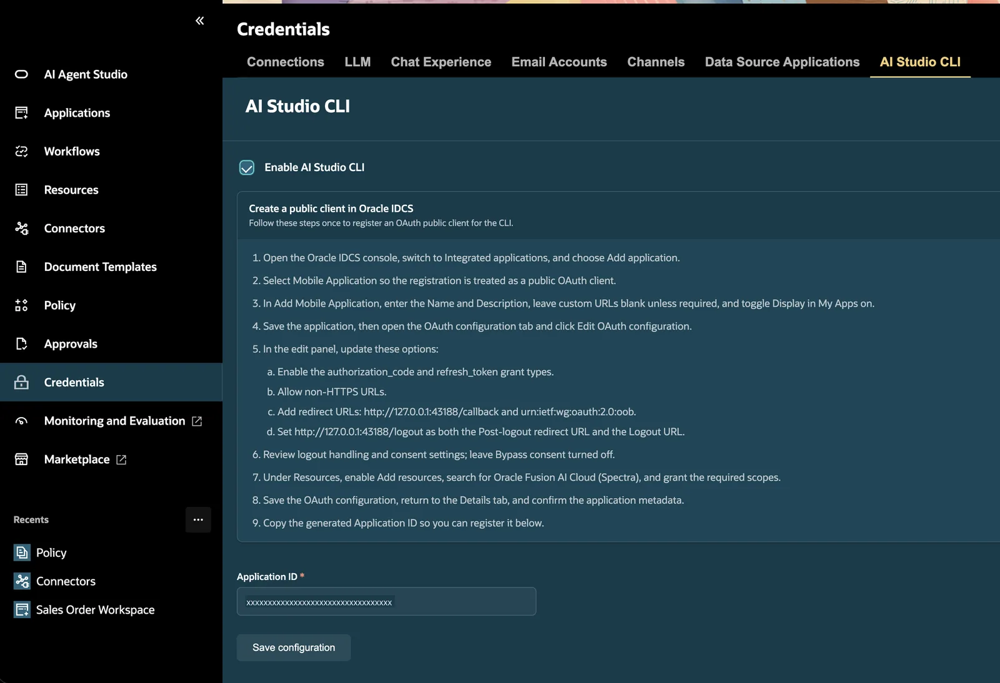
Heads up on the naming
That field is labelled Application ID, and Oracle’s step 9 on the same page says to paste the generated Application ID. Oracle’s written how-to (how-to-configure-oauth-for-aistudio-cli.md) talks about the Client ID from the OAuth configuration tab instead. If authenticate later fails, that mismatch is the first thing to check.
Save it, and the page hands you the finished env.properties — with a copy button:
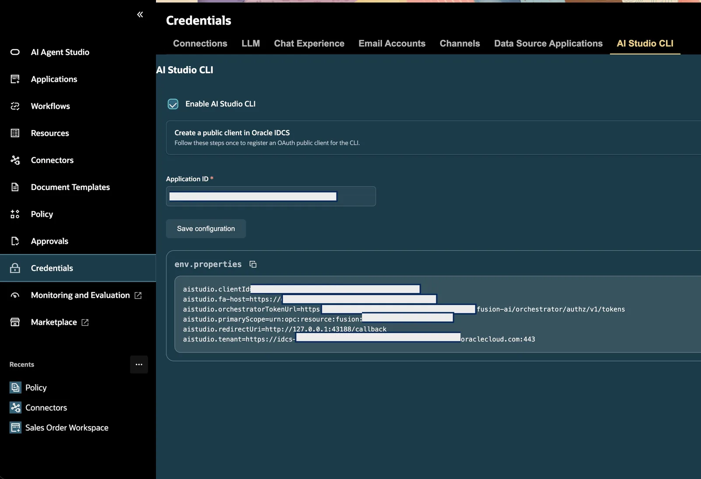
env.properties in your workspace root.Then sign in from the terminal:
node .agents/skills/aistudio/scripts/aistudio.js authenticateA browser opens. Sign in. Come back. Full details are in Oracle’s release-26C/how-to/how-to-configure-oauth-for-aistudio-cli.md.
Either way, env.properties appears
aistudio.clientId=<your client id>
aistudio.fa-host=<your environment host>
aistudio.orchestratorTokenUrl=<token url>
aistudio.primaryScope=<scope>
aistudio.redirectUri=http://127.0.0.1:43188/callback
aistudio.tenant=<tenant>
aistudio.dev-mode=<true|false>Protect your secrets
Do this now, before you forget. Create a .gitignore in your workspace:
env.properties
.debug/env.properties holds your environment host, client ID and encrypted password. It does not belong in a shared repo. .debug/ holds recorded test data from real runs, which can contain live business data.
Check the CLI works
node .agents/skills/aistudio/scripts/aistudio.js --help
# what version am I on?
node .agents/skills/aistudio/scripts/aistudio.js version
# who am I signed in as? (needs auth)
node .agents/skills/aistudio/scripts/aistudio.js whoami--help returns all 288 commands.
Three rules for running the CLI, and they matter
- Always run it from the workspace root. Never
cdinto the skill folder. - Always call it by full path. There is no global
aistudiocommand to install. When Oracle’s prompts showaistudio <command>, that is shorthand for the fullnode .agents/…path. - Never use
npm runornpm testto run workflow tests. Those scripts are for CI pipelines. Call the CLI directly.
Add a CLAUDE.md
Optional, but it saves you a lot of repetition. Create CLAUDE.md in your workspace root:
# Oracle AI Agent Studio workspace
## How to run the CLI
- Always run from the workspace root. Never `cd` into the skill folder.
- Always invoke by path: `node .agents/skills/aistudio/scripts/aistudio.js <command> ...`
- There is no global `aistudio` binary. Do not run `which aistudio` or install one.
- Never use `npm run` or `npm test` for workflow or app tests.
## Skills
- Use the `aistudio` skill for all artifact work (apps, workflows, business objects,
tools, agents, topics, connectors, approvals, policies, document schemas, functions).
- Use `aistudio-apps-succession-management` for HCM succession apps.
- Use `aistudio-apps-warehouse-operations-shortages` for SCM warehouse and shortage apps.
## Hard rules
- Do NOT run `init` unless I explicitly ask to scaffold a blank project.
- Discover and reuse before creating. Treat every existing artifact as read-only.
- Keep everything local. Only fetch, save, publish or push when I explicitly ask.
- Never publish a workflow from the CLI.
- After a material edit, run the matching `validate-*` command.
Unvalidated means unfinished.
- Never write a raw password into env.properties, command arguments, files or logs.
## Layout
- Local artifacts: `src/<type>/` (workflows, apps, agents, businessObjects, tools, ...)
- Oracle samples to reuse: `aiapps/`
- Secrets: `env.properties` (git-ignored)06Your first build
Now the fun part. Open a terminal in your workspace and start Claude Code:
cd ~/fusion-ai-workspace
claudeDescribe the outcome
Do not describe screens. Describe the business problem. This is the shape of prompt that works:
Design and build a Sales Order Workspace agentic app for the fulfilment
specialist who owns a single sales order end to end.
The app should give one order's full picture — order 360, what has shipped
and what has not, which lines are at risk of missing their date — explain
why each exception matters, and let the specialist send the customer-facing
updates that follow from it.Notice what is not in there: no panel names, no widget types, no file names, no field names. That is the point. The skill knows how an order-management workspace is supposed to be shaped.
A note on names
In the screenshots below, the package, workspace and artifact names are mine. Yours will be different. Everything else — the sequence, the gates, the wording the skill uses — is the same.
The agent writes the spec, then stops
This is Rule 1, and it is the most important screenshot in this guide. Below is the gate from the run where I added a fourth panel — In-Transit Shipments — to a finished app. Same behaviour on the first build, and on every change after it:
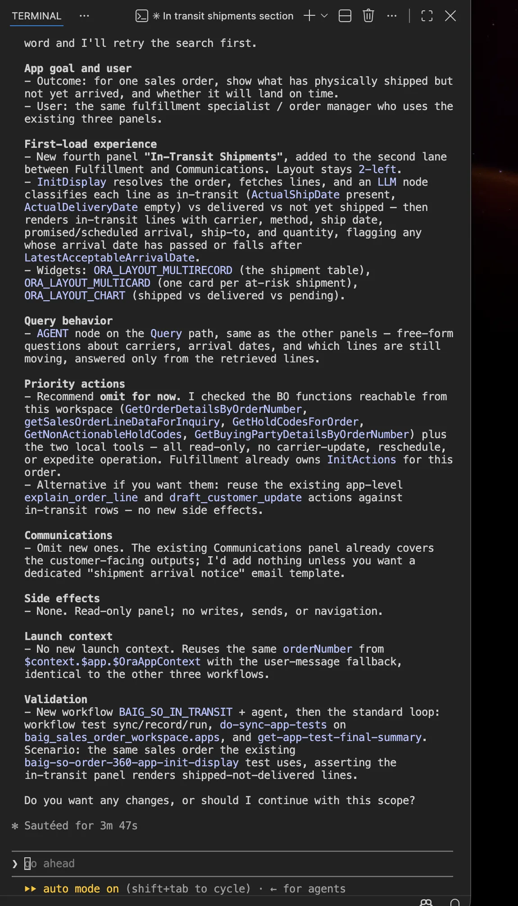
Read what it commits to before writing anything:
| Section of the scope | What it pins down |
|---|---|
| App goal and user | “for one sales order, show what has physically shipped but not yet arrived, and whether it will land on time” — for “the same fulfillment specialist / order manager who uses the existing three panels” |
| First-load experience | Which panel, which lane, which layout, and which widgets: ORA_LAYOUT_MULTIRECORD, ORA_LAYOUT_MULTICARD, ORA_LAYOUT_CHART |
| Priority actions | “Recommend omit for now” — with the list of business-object functions it checked before deciding |
| Communications | “Omit new ones. The existing Communications panel already covers the customer-facing outputs” |
| Side effects | “None. Read-only panel; no writes, sends, or navigation.” That is Rule 2, in writing, before the build |
| Validation | The exact test loop it will run afterwards, named command by named command |
The gate is the feature
It stops on a question. Say no, and the flow ends having created, modified, fetched, saved or published nothing at all. Every gate in these skills works this way.
Discovery, and protected reuse
Look at two of those decisions again. It omitted new priority actions because it had already checked what existed, and it omitted new communications because the existing panel already covered them. That is Rule 3 — and it is not a habit the model happens to have. It is written into the skill. The same handoff document from Step 4 spells it out:
Straight out of the skill’s handoff document
Local-first rule. For every discovery or reference lookup, search the local workspace or local AI Studio project first. Search the environment only if no related local artifact is found, or if the user explicitly asks to compare with environment artifacts.
Environment lookup is read-only. Do not fetch over local files, save, publish, force refresh, overwrite, or otherwise change local or server artifacts as part of discovery.
The most expensive agent in a big company is the one that rebuilds something that already existed. This one is told, in writing, not to be that.
Files, then checks
Say continue, and it builds — narrating each step and running the CLI, not inventing file contents:
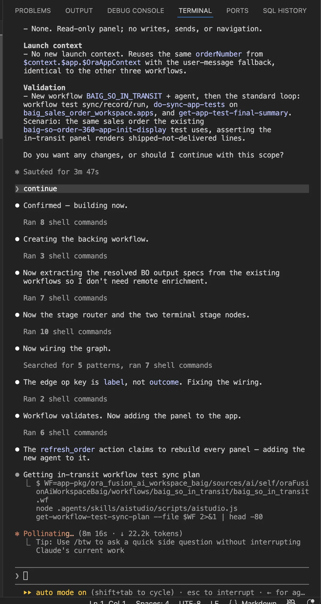
The order of those lines is the whole discipline:
It validated the workflow before attaching it to the app, found its own wiring mistake, and fixed it. Then it went into the test loop it promised in Step 12 — get-workflow-test-sync-plan, then do-sync-app-tests, then get-app-test-final-summary.
Rule 5, in practice
The agent does not get to say “done”. The checks do.
Your workspace now holds real artifacts, in Oracle’s app-package layout:
Open it in the visual editors
Click a .wf file and the extension opens the real workflow editor. This is Rule 4 made visible — the steps are fixed, and the model only fills the slots inside them:
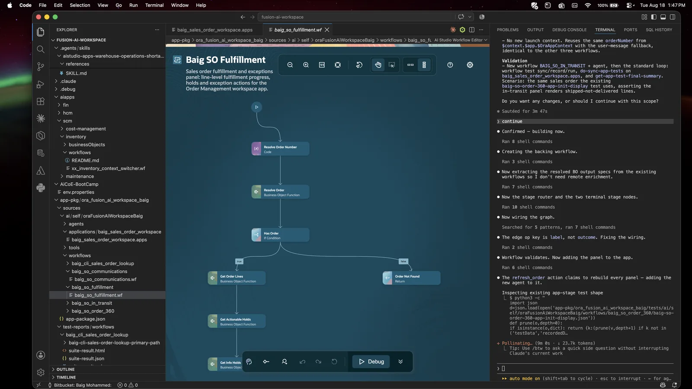
Click a .apps file and you get the app editor — the same one that exists in the Fusion UI:
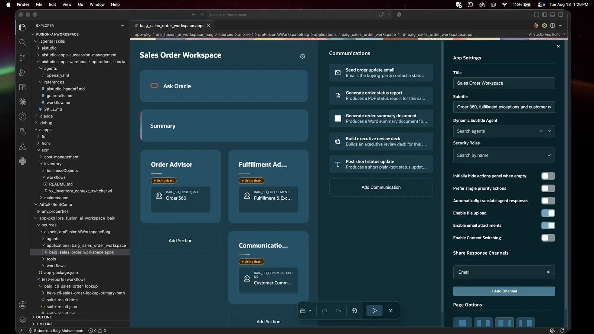
Edit here or edit through the agent; both write the same file.
If you see “This app has been modified on the server”
Someone changed the server copy. Pick Refresh from Server to take theirs, or Cancel to think about it. Do not reach for Override Server unless you are certain.
Save it, then look at it
Everything up to here is local. Nothing has touched your Fusion environment. Save the app as a remote draft (the commands are just below) and it appears in AI Agent Studio under Applications — as a Draft, not live:
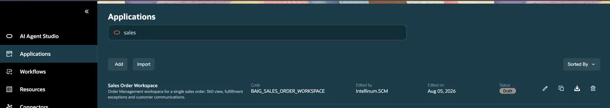
And here it is running, from one paragraph of plain English:
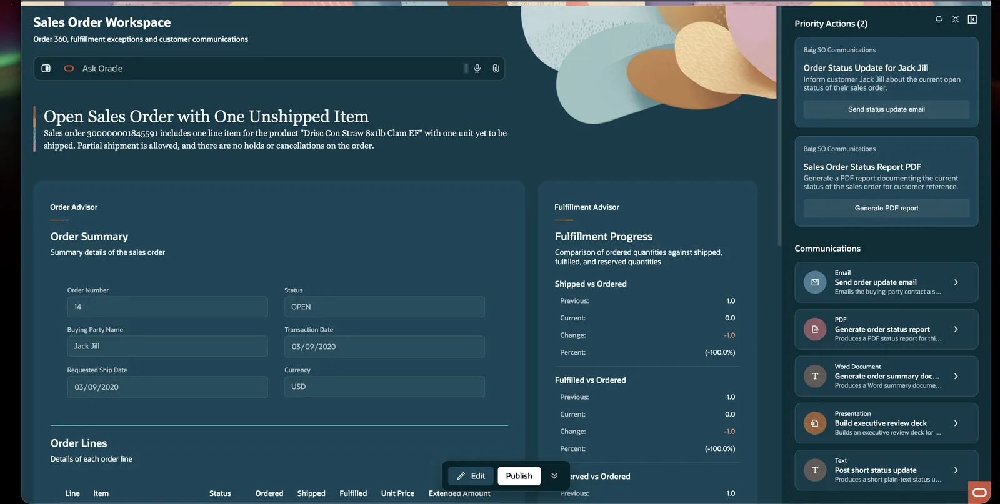
Nothing on that screen changed a record. Every write is an action a human has to press.
Saving and publishing
These are the two commands behind Step 16:
# save an app as a remote draft
node .agents/skills/aistudio/scripts/aistudio.js do-save-app \
--file app-pkg/<your-package>/sources/ai/self/<YourWorkspace>/applications/<app>/<app>.apps
# pull the server's version down instead
node .agents/skills/aistudio/scripts/aistudio.js do-fetch-app \
--code <YOUR_APP_CODE>On a plain (non-package) workspace the file path is simply src/apps/<app>.app.
One hard limit worth knowing
You cannot publish a workflow from the CLI. That is deliberate. Publishing a workflow makes it live for real users, and Oracle keeps that as a human decision in the Fusion UI. The skill is explicitly told not to work around it.
07Every skill and what it does
The three skills you install
| Skill | Slash command | What it is for |
|---|---|---|
| aistudio | /aistudio | The base skill. Handles every artifact type — apps, workflows, business objects, tools, agents, topics, deeplinks, connectors, approvals, policies, document schemas, functions. Routes your request, loads the right reference, runs the CLI. This is the one that does the actual work. |
| aistudio-apps- |
/aistudio-apps- |
A guided companion for HCM succession apps. Knows what a succession readiness workspace should contain, walks you through scope, and hands all file operations to aistudio. New artifacts get the SP_ prefix. |
| aistudio-apps- |
/aistudio-apps- |
The same idea for SCM. Warehouse operations, shortages, stockouts, delayed outbound demand, inbound exceptions, tasking. New artifacts get the WO_ prefix. |
How the two layers relate
The domain skills are wrappers. They handle the conversation — what should this app contain, which panels, what is in scope. They never create a file themselves. Every file operation goes down to aistudio. That is why they can be beginner-friendly without being unsafe.
You usually do not need to type a slash command at all. Say “build a succession planning app” and the right skill loads on its own. Type /aistudio when you want to force it.
What the domain skills guarantee
Both follow the same contract, and it is a good one:
- A structured welcome before anything happens — business purpose, recommended MVP, what is deliberately deferred, how it will be built
- Exactly one option marked “Recommended” at every decision
- A pause after every gate. No forward motion without your choice
- A written proposal before any file is created
- Every discovered artifact treated as read-only. Never modified, renamed, deleted or overwritten
- Validation of only the files this run created. Not directories, not globs, not siblings
- A “Stop” option at every step that leaves nothing changed
One difference worth knowing: the succession skill searches your local workspace first, then the environment. The warehouse skill searches the connected environment first, then falls back to local. That is because warehouse artifacts ship seeded in Fusion, while succession samples ship in the GitHub repo.
Inside aistudio: the 30 prompt reference files
The base skill stays short on purpose. The detail lives in references/prompts/, and the agent loads only what the task needs — that is what keeps it fast.
Workflows
| File | What it covers |
|---|---|
| workflow-vibe.md | The main workflow authoring guide |
| workflow-debug.md | Debugging a workflow that misbehaves |
| workflow-debug-plan.md | Plan-mode debugging |
| workflow-test-authoring.md | Generating, recording, running, judging and self-healing workflow tests. Also model cost and token optimisation. |
| workflow-cli-compat.md | Which CLI command matches which workflow operation |
Agentic apps
| File | What it covers |
|---|---|
| app-ingestion.md | The intake questions to ask before starting a new app |
| app-best-practices.md | App structure, workflow contracts, widgets, actions, communications, validation |
| app-vibe-master.md | The main app authoring guide |
| app-vibe-plan.md | Plan-mode app design |
| app-vibe-actions.md | Building app actions |
| app-vibe-templates.md | Document templates — PowerPoint, PDF, email, text |
| app-vibe-widgets.md | Choosing and configuring the seven widget types |
| app-test-authoring.md | App test generation, recording, widget validation, self-healing |
Data and tools
| File | What it covers |
|---|---|
| business-object-builder.md | Building business objects — your data connections |
| business-object-cli-compat.md | Business object CLI parity |
| tools-builder.md | Building tools: business object, deeplink, document, email, external REST, MCP, connector |
| tools-cli-compat.md | Tool CLI parity |
| connector-definition-cli-compat.md | Generating connector definitions from OpenAPI or MCP specs |
| connector-instance-cli-compat.md | Configuring connector instances |
Governance and documents
| File | What it covers |
|---|---|
| approval-process-builder.md | Approval processes, levels, approver types, notification channels |
| approval-process-cli-compat.md | Approval CLI parity |
| policy-store-builder.md | Policy stores — turning policy documents into callable functions |
| policy-store-cli-compat.md | Policy CLI parity |
| document-schema-builder.md | Document schemas for structured extraction |
| document-schema-cli-compat.md | Document schema CLI parity |
| function-builder.md | Reusable function templates |
| function-cli-compat.md | Function CLI parity |
General
| File | What it covers |
|---|---|
| index.md | The map of all of the above |
| artifact-conventions.md | File paths, extension mapping, normalised file shape |
The 27 workflow node prompt files
Every node type in a workflow graph has its own rule file, in references/prompts/workflow-node-prompts/:
| Group | Node prompt files |
|---|---|
| Structure | start-end · return · reference · reference-block · comment-diagram-only |
| AI | llm · agent · rag-document-tool |
| Logic | code · set-variables · if-condition · switch · for-loop · while-loop · parallel · wait |
| Data | bo-function · external-rest · tool · document-processor · vector-db-reader · vector-db-writer |
| People | human-approval · email |
| Composition | workflow |
You will never read these yourself. The agent reads the two or three it needs and ignores the rest.
The artifacts you can create
| Artifact | Extension | In plain language |
|---|---|---|
| App | .app | The screen a business user opens |
| Workflow | .wf | The step-by-step plan behind a panel |
| Business Object | .bo | A connection to real data |
| Agent | .agent | A reusable AI worker with a role and tools |
| Tool | .tool | One capability an agent can use |
| Topic | .topic | Instructions for one subject area |
| Deeplink | .dl | A link that opens a Fusion page or record |
| Connector Definition | .connectorDefinition | A connector generated from an API spec |
| Connector Instance | .connectorInstance | A configured external connection |
| Approval Process | .approval | Who approves what, and how they are told |
| Policy Store | .policy | Policy documents turned into callable functions |
| Policy Template | .policyTemplate | A reusable policy function contract |
| Document Schema | .documentSchema | The shape to pull out of a document |
| Function Template | .function | A reusable code function |
They live under src/<type>/ in a plain workspace, or inside app-pkg/<package>/sources/ if you use app packages.
08Slash commands
Be precise here, because it trips people up
Oracle does not ship slash commands. It ships skills. Claude Code turns every skill into a slash command automatically, so after Step 5 you get three.
/aistudio
/aistudio-apps-succession-management
/aistudio-apps-warehouse-operations-shortagesType / in Claude Code and they appear in the list. Most of the time you will not need them — describe the outcome and the right skill loads itself.
There is a second, separate set: the VS Code command palette commands from the extension, reached with Cmd/Ctrl+Shift+P. Those are the twelve in the Step 3 table. Different mechanism, different place, both useful.
Slash commands worth creating yourself
These are the ones I actually use. Drop each as a .md file in .claude/commands/ in your workspace and it becomes a slash command.
/ai-status — is everything wired up?
Report the state of this AI Studio workspace. Do not change anything.
1. Run `node .agents/skills/aistudio/scripts/aistudio.js version`
2. Run `node .agents/skills/aistudio/scripts/aistudio.js whoami`
3. List local artifacts under `src/` and `app-pkg/*/sources/`, grouped by type
4. List which skills are present in `.agents/skills/`
5. Confirm `env.properties` is covered by `.gitignore`
Report findings as a short table. Do not run init, fetch, save or publish./ai-validate — did everything pass?
Validate every local artifact I have created in this workspace.
For each file under `src/` and `app-pkg/*/sources/`, run the matching
`validate-*` command with `--file <path>`, one file at a time.
Never validate a directory or a glob. Never validate anything under `aiapps/`
— those are Oracle's read-only samples.
Report a table: file, artifact type, pass or fail, and the exact error text
for any failure. Do not attempt fixes unless I ask./ai-discover — what already exists?
Find what already exists before I build anything new: $ARGUMENTS
Search the local workspace first — `aiapps/`, `src/`, and any app packages.
Only search the connected environment if nothing relevant is found locally.
Report a table: artifact name, type, file path, status (Found locally /
Found in environment / Not found), and one line on what it does.
Treat everything you find as read-only. Recommend reuse over creation.
Do not create, modify or fetch anything./ai-explain — what does this artifact do?
Explain this artifact in plain business language: $ARGUMENTS
Cover: what business question it answers, what data it reads, what it returns,
which nodes or panels it contains, and whether it writes any data.
Use `get-workflow-node-structure`, `get-panel-metadata` or the matching
inspect command — read-only only. No changes./ai-app — build a new agentic app
Build a new agentic app: $ARGUMENTS
Use the right skill for the domain — `aistudio-apps-succession-management` for
HCM succession, `aistudio-apps-warehouse-operations-shortages` for SCM
warehouse and shortages, otherwise `aistudio`.
Follow the skill's flow exactly. Discovery first, written proposal second,
my approval third, creation fourth, validation last.
Do not create any file before I approve the proposal./ai-test — run the test sync loop
Run the test sync loop for: $ARGUMENTS
1. `get-workflow-test-sync-plan --file <file>` and show me the plan
2. Wait for my go-ahead
3. Complete the sync loop per `workflow-test-authoring.md`
4. `get-workflow-test-final-summary --file <file>`
Use that final summary output verbatim as the evidence in a section titled
`Validation and Insights`. Never pass `--judge-provider remote`.
Never use npm scripts./ai-cost — where are the tokens going?
Analyse model cost and token usage for: $ARGUMENTS
Read the optimisation section of `workflow-test-authoring.md`, then:
- `get-workflow-model-override-targets` to see which nodes can change model
- `analyze-token-usage` on the most recent completed test run
- `propose-sweep-candidates` for a suggested optimisation sweep
Report where tokens are going and the two or three changes with the best
payoff. Do not change any model without my approval./ai-safety — can it change anything it should not?
Safety review of everything I have built in this workspace.
For each local app and workflow, report:
- every action that writes or changes business data
- whether each one has a visible review-and-confirm step before the write
- every outbound communication (email, text, notification) and what triggers it
- anything that could run without a human saying yes
Flag anything that can change a record without explicit confirmation.
Read-only review. Change nothing.A normal session
/ai-status → is everything wired up?
/ai-discover succession workflows → what already exists?
/ai-app a succession planning app for people managers
/ai-validate → did it pass?
/ai-safety → can it change anything it should not?09The CLI command map
288 commands is a lot. You do not need to memorise any of them — the agent picks them. But knowing the shape helps you read what the agent is doing, and spot when it is about to do something you did not intend.
Authentication and setup
| Command | What it does |
|---|---|
| authenticate | Sign in via OAuth PKCE |
| configure-basic-auth | Save the FA password encrypted |
| login-with-key | Non-interactive sign-in for CI |
| whoami | Who am I signed in as |
| logout | Remove stored credentials |
| version | CLI version |
| init | Scaffold a blank project — only when you explicitly ask |
| init-app-package | Scaffold an app package |
By verb — and what each one can touch
| Prefix | Count | What it means | Reach |
|---|---|---|---|
| do-create-* | 31 | Create a new local artifact file | writes locally |
| do-modify-* | 30 | Patch a local file | writes locally |
| get-* | 30 | Inspect and report | read-only |
| list-* | 29 | List what is available | read-only |
| do-delete-* | 20 | Delete an artifact | destructive |
| do-fetch-* | 15 | Pull server state into a local file | overwrites local |
| do-add-* | 15 | Add a sub-element (node, function, tool, topic) | writes locally |
| validate-* | 14 | Check without changing | read-only |
| do-save-* | 14 | Push a local file to the server as a draft | writes to server |
| do-update-* | 13 | Update fields on a local file | writes locally |
| run-* | 9 | Run a workflow, chat or test | executes |
| do-generate-* | 9 | Generate content (descriptions, connectors, functions) | writes locally |
| do-remove-* | 9 | Remove a sub-element | writes locally |
| search-* | 8 | AI-assisted recommendations | read-only |
| do-publish-* | 2 | Publish a policy or connector definition | goes live |
The four to actually watch: do-save-*, do-fetch-*, do-delete-*, do-publish-*. Everything else stays on your laptop.
By artifact area
| Area | Typical commands |
|---|---|
| Apps | do-create-app · do-add-agent · do-modify-agent-config · do-add-communication · do-add-template · do-add-action · do-modify-page-pattern · get-panel-metadata · validate-app · do-save-app |
| Workflows | do-create-workflow · do-create-node · do-modify-node · do-modify-node-edges · do-delete-node · do-prettify-workflow · validate-workflow · get-workflow-node-structure · run-workflow · run-workflow-chat · do-save-workflow |
| Business objects | do-create-bo · do-add-bo-function · do-create-bo-function-from-operation · do-add-bo-function-parameter · do-add-bo-function-example · get-business-object-functions · validate-bo · do-save-bo |
| Tools | do-create-tool (business object, deeplink, document, email, external REST, MCP, connector) · do-update-tool · validate-tool · do-save-tool |
| Agents & topics | do-create-agent · do-add-agent-tool · do-add-agent-topic · do-create-topic · do-add-topic-instruction · validate-agent · validate-topic |
| Connectors | do-generate-connector-definition · do-publish-connector-definition · prepare-connector-instance-create · do-create-connector-instance · do-save-connector-instance |
| Approvals | do-create-approval-process · do-create-approval-rule · do-modify-approver-type · do-modify-notification-channel · search-approval-users · validate-approval-process |
| Policies | do-create-policy · do-add-policy-documents · do-generate-policy-functions · do-create-policy-template · do-publish-policy · validate-policy |
| Testing | get-workflow-test-sync-plan · do-generate-workflow-test · do-record-workflow-test · run-workflow-test · run-workflow-tests · get-workflow-test-final-summary · get-app-test-sync-plan · do-sync-app-tests · run-app-tests · get-app-test-final-summary |
| Cost optimisation | list-workflow-model-configurations · get-workflow-model-override-targets · propose-sweep-candidates · run-optimization-sweep · analyze-token-usage · generate-optimization-report · compare-workflow-test-runs |
| Discovery (AI-assisted) | search-business-objects · search-workflows · search-agents · search-deeplink-tools · search-external-rest-tools · search-document-tools · search-connector-definitions |
| Debugging | get-nodes-executed-on-last-debug · get-debugger-results-for-nodes · list-pinned-outputs · do-modify-node-overrides · do-node-override-output · do-clear-node-override |
Any command will explain itself:
node .agents/skills/aistudio/scripts/aistudio.js do-create-app --help10What you are actually building
Worth understanding what an agentic app is, because it is not what most people assume.
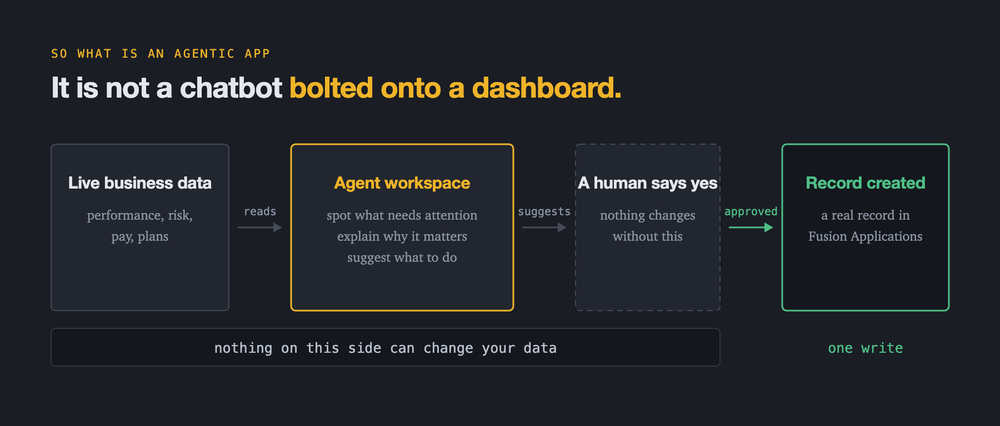
The flow is: live business data → an agent workspace that spots what needs attention, explains why it matters, and suggests what to do → a human says yes → a real record is created in Fusion. The agent reads and reasons. Only a human approval turns that into a write.
The four pillars
Every feature in an agentic app is one of these four:
| Pillar | What it does | How it appears |
|---|---|---|
| Information Displays | Agent-generated visuals | Seven widget types via <oraInfoDisplay>. The agent produces structured metadata; Oracle renders it. The UI is never hardcoded. |
| Actionable Insights | Turns analysis into execution | Each insight has a Title, Description, and agent-generated Execution Instructions. The agent that created an action owns running it. |
| Communications | Outbound messaging | App-defined (template-based: PowerPoint, PDF, email, text) or agent-generated at runtime (email and text only). Always outbound — never intercepts incoming. |
| Ask Oracle Advisors | The conversational layer | Answers combine text with full information displays. In Section Focus it scopes to only the agents powering that section, so a domain expert answers rather than a generalist. |
All four, on one screen:
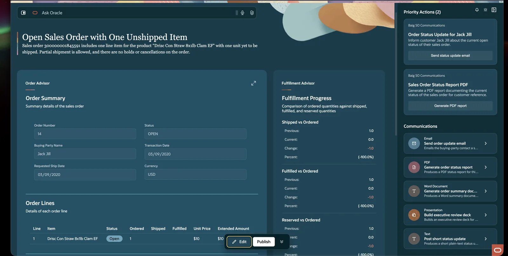
The seven widget types
| Widget | patternId | Best for |
|---|---|---|
| Chart | chartWidget | Trends over time, category comparisons, proportions |
| Card | cardWidget | Single alerts, notifications, status with priority variants |
| Message List | messageListWidget | Ordered lists of messages or alerts with priority badges |
| Change List | changeListWidget | Before/after comparisons — current vs previous |
| Multi Record | multiRecordWidget | Tables with sortable columns, row actions, bulk operations |
| Record | recordWidget | A single record’s details or key-value display |
| Sankey | sankeyWidget | Flow visualisation — how quantities move between stages |
Three of them in one panel — a change list for shipped-versus-ordered, a card for the exception, and a footer of suggested actions:
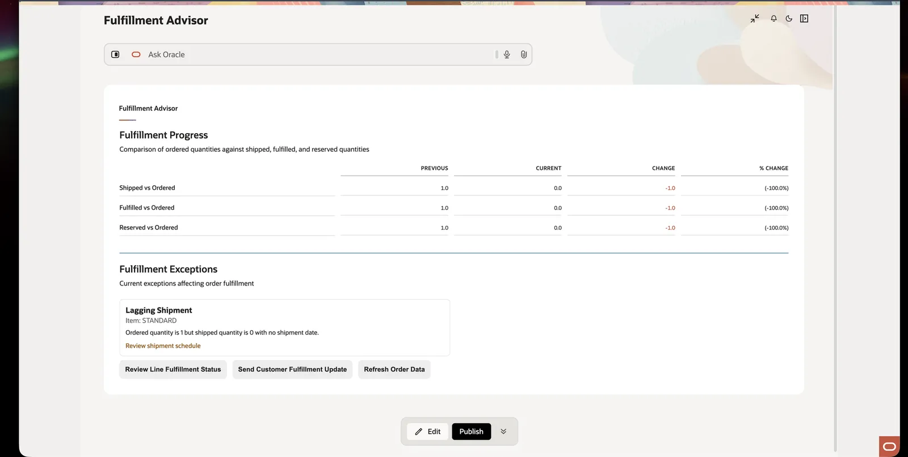
The five-layer section structure
Every section in every agentic app follows the same shape. Users learn it once.
| Layer | Content | Example |
|---|---|---|
| 1 | Headline — the single most important insight | “3 supplier contracts expire this week” |
| 2 | Short description — why it matters, what triggered it | “AcmeParts has the highest renewal risk based on SLA trends” |
| 3 | Content — detail via widgets | Lists, tables, cards, forms |
| 4 | Visualisations — charts for trends | Bar, pie, line, Sankey |
| 5 | Footer — sources plus suggested actions | [ Take Action ] [ Details ] |
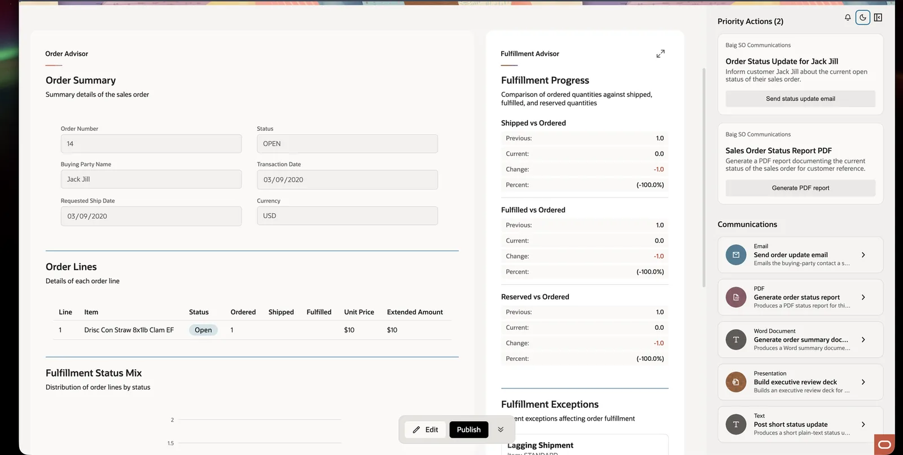
$OraMessageHint — how everything is triggered
This is the mechanism that makes the whole thing work. When something happens in an app, Oracle sends your workflow a value in $context.$app.$OraMessageHint, and your workflow branches on it — usually with a Switch node as the very first step.
Phase 1 — five hints fire in parallel the moment the app loads
| Hint | What it asks for |
|---|---|
| InitSubtitle | The dynamic tagline — “Good morning, Meg.” |
| Summary | A one- or two-sentence overview — “3 items need review.” |
| InitDisplay | Render the widgets — charts, lists, cards |
| InitActions | The priority insights — approve, review, act |
| InitCommunications | Suggested messages — email, text, PDF |
They run in parallel, which is why a fully populated app appears in seconds.
Phase 2 — user-driven events
| Hint | Fired when | Extra context it gets |
|---|---|---|
| Query | Someone asks Ask Oracle a question | $chatHistory |
| InvokeAction | Someone clicks an action button | $OraAction |
| FillParameters | A communication needs auto-filling | $OraCommsParamsToFill |
| SendCommunication | A message is delivered | — |
| AdditionalContent | A panel asks for more | $OraPanelName |
Workflow teams vs supervisor teams
| Workflow Teams recommended | Supervisor Teams fallback | |
|---|---|---|
| Shape | Hint → Switch/Route → Agent → Structured output | Request → Supervisor picks workers → Workers |
| Routing | Structured, via $OraMessageHint | The supervisor decides at runtime |
| Latency | Predictable | Less predictable |
| Risk | Low | Can make excessive LLM calls |
| Use for | Production apps | Quick prototypes, edge cases |
Use workflows for production. Also worth knowing: only published workflows get invoked.
The decisions that matter
| Decision | What to do |
|---|---|
| Team type | Workflow first. Supervisor only for dynamic multi-turn collaboration. |
| One agent or many | Many, always. Specialised agents per domain beat one generalist. |
| Team granularity | Break into smaller topic areas; combine at the app level. |
| Context passing | Pass explicitly via $context.$system.$inputMessage. Never assume it arrives on its own. |
| Terminal workflow paths | End with an Agent or LLM node, not Code or Output, so streaming works later. |
| Communication type | Templates for documents (PowerPoint, PDF); agent-generated for ad-hoc email and text. |
| Action invocation | ora.Invoke() for defined workflows; ora.Agent() for ad-hoc commands. |
| Drill-down navigation | ora.App.launch() or the Navigate to App action step. |
| Response time | 60-second hard limit. Minimise LLM and Agent nodes. Test latency in Preview. |
The 60-second limit shapes everything else
It is why deterministic workflows beat improvising supervisors, and why the agent is stingy with LLM nodes. If your app is slow, that is the constraint you are hitting.
11Things that go wrong, and the fix
| Problem | What is happening | Fix |
|---|---|---|
| Claude Code cannot see the skills | They are only in .agents/skills/ | Do Step 5. Confirm with ls -la .claude/skills. |
AUTH_REQUIRED in a JSON response | Your token expired or was never set | Do not treat that JSON as the answer. Run the interactiveCommand it returns in a real terminal, then retry. Never paste a raw password into a command. |
| Password prompt never appears | Some terminal UIs cannot show hidden prompts | Run configure-basic-auth in a real terminal, or authorise --password-stdin explicitly. Never write a password into env.properties. |
| The agent scaffolded a blank project | It ran init when it should not have | Put “Do NOT run init unless I explicitly ask” in CLAUDE.md. init is only for genuinely empty projects. |
| “This app has been modified on the server” | The server copy diverged from yours | Refresh from Server to take theirs, Cancel to think. Only Override Server if you are certain. |
| “found artifact files using legacy extensions” | You are on .app/.dl/.approval; newer is .apps/.deeplink/.approvalProcess | Migrate if you are starting fresh. Skip if existing tooling depends on the old names. |
| Agent asks which app package to use | You have more than one under app-pkg/ | Name it in your request. The skill deliberately will not guess. |
A .wf edit broke after a CLI command | Shell quoting ate an expression like $context or {{...}} | Use a file-backed patch: --inputs-patch @.debug/my-inputs.json. Then validate. |
| Workflow test says “remote judge” | A CI npm script leaked in | Never pass --judge-provider remote unless you mean it. Never use npm scripts for tests. |
| Agent will not publish a workflow | Correct behaviour | Publishing a workflow is deliberately UI-only. Do it in Fusion. |
| App runs slowly or times out | You are near the 60-second ceiling | Reduce LLM and Agent nodes. Run analyze-token-usage. Move logic into Code nodes. |
12Keeping it up to date
Oracle ships updates to this repo. The change log at the top of the README tells you what moved. Four folders, three of which get replaced:
| Folder | On update |
|---|---|
| aiapps/ | replace with the latest from the repo |
| .agents/skills/aistudio/ | replace |
| .agents/skills/aistudio-apps-*/ | replace all of them |
| src/ | never touched — this is your work |
# 1. get the latest
cd ~/fusion-ai-repo/fusion-ai-studio
git pull
# 2. replace the samples
rm -rf ~/fusion-ai-workspace/aiapps
cp -R release-26C/aiapps ~/fusion-ai-workspace/
# 3. replace the skills (unzip the new ones first)
rm -rf ~/fusion-ai-workspace/.agents/skills/aistudio
cp -R <newly-unzipped>/aistudio ~/fusion-ai-workspace/.agents/skills/
# 4. reinstall the extension from the new .vsix (Install from VSIX again)If you used symlinks in Step 5, .claude/skills/ picks the update up automatically. If you copied, re-copy now. This is the reason symlinks are worth the extra minute.
—The part that actually matters
Setup is maybe forty minutes. But the setup is not the interesting bit.
The interesting bit is that Oracle wrote down their own expertise as files a machine can read, and put a boundary between the AI and the running system. The AI writes files. Oracle checks the files. Oracle builds the screens. A human approves anything that changes a record.
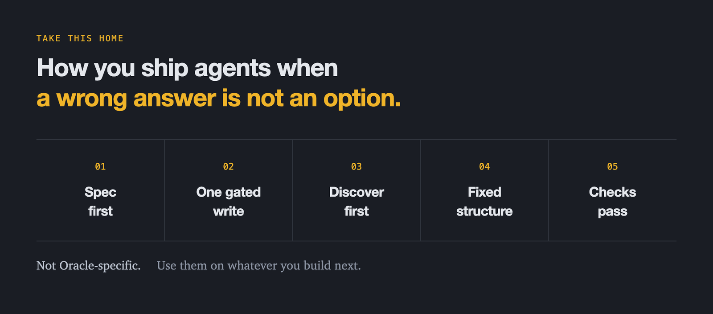
That is how you ship agents when a wrong answer is not an option. The spec comes first. One gated write action. Discover before you build. Structure over improvisation. Unvalidated means unfinished.
Links
- Oracle’s repo — github.com/oracle/fusion-ai-studio
- Oracle Fusion AI documentation
- Oracle Fusion AI product page
- Claude Code
- In the repo:
release-26C/how-to/install-and-use-fusion-ai-studio-CLI_vscode-codex.md,how-to-configure-oauth-for-aistudio-cli.md,how-to-uptake-incremental-updates.md
Tested against release-26C · CLI version 1.0.1784919021375 · 288 CLI commands · 3 skills · 30 prompt references · 27 node prompts. Independent guide, not affiliated with Oracle.